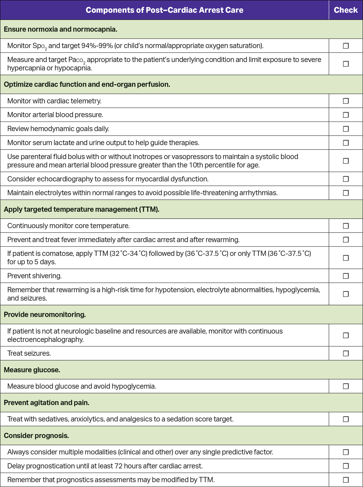
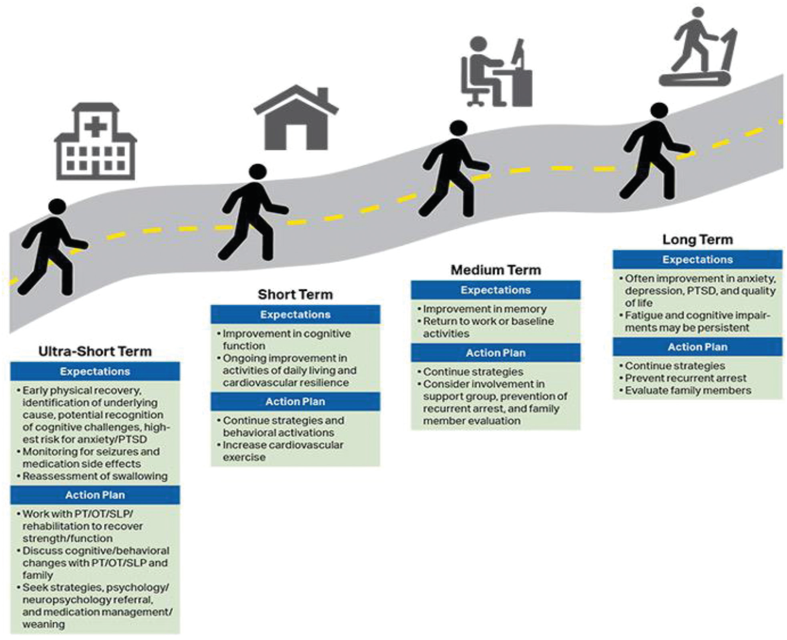

לחצו בכל מקום לסגירה · click anywhere to close
חמצון ואוורור · יציבות המודינמית · ויסות חום · גלוקוז ופרכוסים
Oxygenation & ventilation · hemodynamics · temperature · glucose & seizures
מבוסס על AHA PALS 2025 (Post–Cardiac Arrest Care).
תסמונת לאחר דום לב כוללת תפקוד מוחי לקוי, תפקוד לבבי ירוד ופגיעת איסכמיה-רה-פרפוזיה. המטרה: לייצב ולמנוע הידרדרות.
Post-arrest syndrome includes brain dysfunction, myocardial dysfunction and ischemia-reperfusion injury. Aim: stabilize and prevent deterioration.
| פרמטר | יעד |
|---|---|
| סטורציה (SpO₂) | 94–99% — הימנע מהיפוקסמיה ומהיפרוקסמיה |
| אוורור (PaCO₂) | נורמוקפניה המותאמת למטופל; הימנע מהיפרוונטילציה |
| ניטור | קפנוגרפיה רציפה, גזים בדם, מוניטור רציף |
| Parameter | Target |
|---|---|
| Saturation (SpO₂) | 94–99% — avoid hypoxemia and hyperoxemia |
| Ventilation (PaCO₂) | Patient-appropriate normocapnia; avoid hyperventilation |
| Monitoring | Continuous capnography, blood gases, continuous monitor |
פרוגנוזה נוירולוגית: רב-ממדית, ולא בשעות הראשונות.
Neuroprognostication: multimodal, and not in the first hours.


לחצו על תמונה להגדלה.
Click an image to enlarge.
הסיבה לדום הלב חשובה: טראומה, נוקשות, הרעלה, מחלת לב מולדת — כל אחת משנה את הגישה.
The cause of arrest matters: trauma, drowning, poisoning, congenital heart disease — each changes the approach.